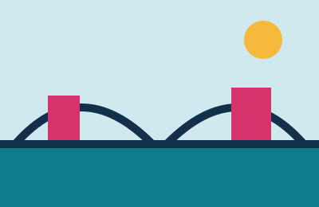
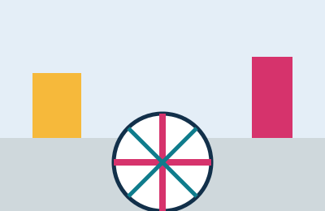
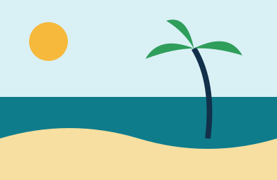
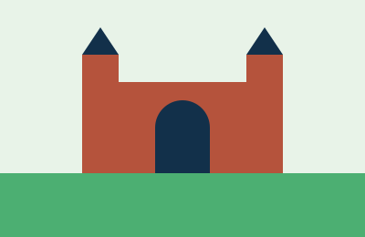

Rua do Bom Jesus
Uma das ruas mais antigas das Américas, no Recife Antigo, onde fica a primeira sinagoga do continente.
Use os botões para filtrar por tipo de passeio.

Uma das ruas mais antigas das Américas, no Recife Antigo, onde fica a primeira sinagoga do continente.

Praça do Recife Antigo com a rosa dos ventos no piso e vista para o porto. Palco de shows no Carnaval.

Quatro quilômetros de orla com piscinas naturais formadas pelos recifes na maré baixa.

Castelo com coleção de armas medievais, pinturas e esculturas rodeado por jardins.